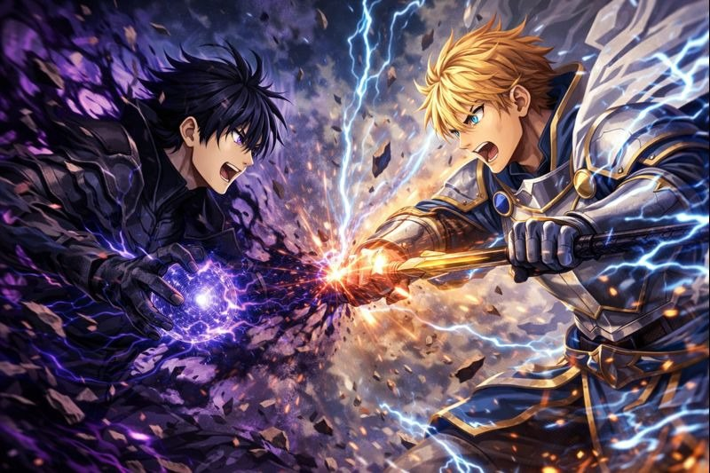

Наруто Узумаки
Обладает невероятным запасом чакры благодаря
унаследованному от матери клану Узумаки и
заключенному внутри него Девятихвостому
Демону Лису, Кураме. Он мастерски владеет
техникой Теневого Клонирования, создавая
множество физических копий себя. Наруто
разработал мощную технику Расенган,
концентрируя чакру в сфере. Он способен
входить в режим Отшельника, значительно
усиливающий его физические способности
и сенсорное восприятие.

Луффи Манки
Обладает резиновым телом
благодаря Дьявольскому плоду Гому Гому,
что дает ему эластичность и
устойчивость к ударам. Он использует
резиновые атаки, такие как
"Резиновый хлыст". Луффи разработал
"Гиры", усиливающие его способности.
Он также владеет всеми тремя видами
Хаки: Вооружения, Наблюдения и
Завоевателя. Цель Луффи - стать
Королём Пиратов.

Годжо Сатору
единственный в своём роде обладатель техник
6 глаз и познавший все таинства бесконечности,
которою считают непревзайдённой защитой в
его версе, так же его РТ благодаря бесконечнсти
буквально создаёт пространство наполняющее
жертву всеми видами информации вселенной
и обездвиживает цель ею имеет регенерацию
и может востанавливать части тела сжигая
свой мозг и тут же его регенерировать.

Сид Кагэно (Тень)
Владелец Сада Теней, сильнейшей
организации, обладает безграничным
запасом магии. Покрывая себя магией,
усиливает защиту и навыки владения мечом.
Его потенциал огромен. Он обладает
развитым РТ, позволяющим создавать
мощные магические взрывы, сравнимые с
атомнымию. Благодаря этому, он легко
уничтожает врагов, не прилагая усилий.
По силе сопоставим с ведьмой бедствия.

Сон Гогу
Эталон силы, сравнимый с богами разрушения,
убивал противников планетарного уровня.
Один из сильнейших своего мира.
Физически способен разрушать планеты,
аурой поражает даже богов. Обладает
огромной магической силой. Может
сливаться с друзьями, превосходя
божественный уровень. Уникальная
форма жизни, способная уничтожать
себя и открывать новую форму души.

Сайтама
человек превзошедший все лимиты во
вселеенной, ему не страшен ни
телекенез, ни притяжение черных
дыр, он буквально физически не удержим.
Он победил вселенного злодея, который
стёр из истории многие планеты и нации,
благодаря чему считался сильнейшим.

Мадара Учиха
БОГ мира Наруто, намного превосходящий
всех соперников. Сравним с первым сыном
создателя мира и чакры. Обладает
телепортацией в другие миры, невидимым
клоном и бесконечной волей к жизни.
Чакры глаз и режим биджу дерева,
даровавшие силу даже прародительнице.

Ичиго Куросаки
Он не просто главный герой Bleach,
он символ безграничного потенциала
и непрерывного роста. Его сила – это
уникальное сочетание способностей
шинигами, человека, квинси и даже пустого,
что делает его одним из самых
могущественных персонажей во всем аниме,
обладает огромным количеством духовной
энергии (рейацу), что позволяет ему
использовать способности шинигами,
имеет имунететы к ядам.


Сон Джин Ву
Его сил хватит, чтобы стирать и создавать
вселенные, он может существовать за их гранью

Артур Пендрагон
Обладает силой хаоса неполностью
расскраывает её и далёк от своего
пика, бессмертен в своём мире и
вселенной, но подвержен временной
магии и мировому изданию.
Может создавать миры и звёзды